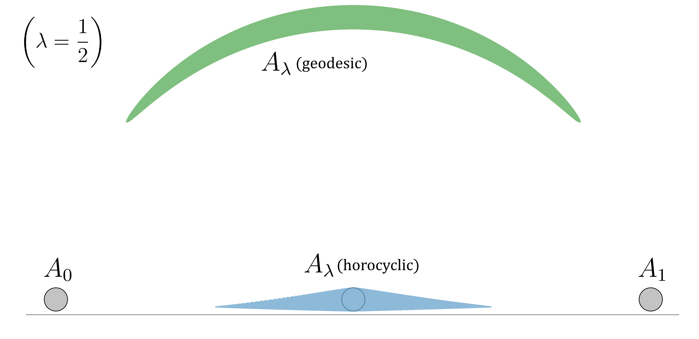

Weizmann Institute of Science
September 2025
Rotem Assouline
Advisor: Prof. Bo'az Klartag
Prelude: The Brunn-Minkowski inequality
\(A,B \subseteq \mathbb{R}^n\) , \(0 \lt \lambda \lt 1\) .
\[(1-\lambda) A + \lambda B : = \left\{(1-\lambda)a + \lambda b \, \mid \, a \in A, \, b \in B\right\}.\]Theorem (Brunn-Minkowski-Lusternik) :
For every \(A,B \subseteq \mathbb{R}^n\) Borel, nonempty and every \(0 \lt \lambda \lt 1\) , \[\mathrm{Vol}((1-\lambda) A + \lambda B)^{1/n} \ge (1-\lambda)\cdot\mathrm{Vol}(A)^{1/n} + \lambda\cdot\mathrm{Vol}(B)^{1/n}.\]Replace \( \mathrm{Vol} \) with \( \mu = e^{-\psi}\mathrm{Vol} \) .
Characterization of measures \(\mu\) satisfying Brunn-Minkowski inequalities in terms of the function \(\psi\) (log concave, \(s\)-concave) (Borell '75, Brascamp-Lieb '76)
Using a linear structure
Using a metric
Using a principle of least action?
Part 1: Lagrangians
A Lagrangian \(L\) on a manifold \(M\) is a smooth function on the tangent bundle \(TM\).
🔮 A Lagrangian assigns a value to each position and velocity.
The action of a curve \(\gamma:[0,T]\to M \) is: \[\mathrm{A}(\gamma) : = \int_0^T L(\dot\gamma(t))dt.\]
A minimizing extremal of \(L\) is a curve which minimizes the action \(\mathrm{A}\) among all curves with the same endpoints.
🔮 An extremal is a path for which the integral of the values assigned by \(L\) over the entire journey is the smallest possible.
The Hamiltonian is the function \[H(p) : = \sup_{v \in T_xM}p(v) - L(v), \quad p\in T^*_xM,\,\,x \in M.\]
The tangent vector where the above supremum is achieved is denoted by \(\mathcal{L}p\), and we call the map \(\mathcal{L} : T^*M \to T_xM\) the Legendre transform associated to \(L\).
The energy is the function \(E : = H \circ \mathcal{L}\) on \(TM\). If \(\gamma\) is a minimizing extremal then \(E(\dot\gamma)\equiv 0\) .
🔮 The Hamiltonian is essentially the energy and is conserved along extremals.
Given a smooth function \(u\) and a measure \(\mu\) with a smooth density on \(M\), we set \[\nabla u : = \mathcal{L}du \qquad \text{ and } \qquad \mathbf{L} u : = \mathrm{div}_\mu(\nabla u).\]
The Hamilton-Jacobi equation is \[H(du) = 0.\] If \(u\) is a solution to the H-J equation, then the integral curves of \(u\) are zero-energy extremals.
🔮 Once we fix a Lagrangian, we have natural notions of gradient and Laplacian.
Part 2: Optimal Transport
\((\mathcal X_0,\mu_0),(\mathcal X_1,\mu_1)\) - probability spaces.
\(\mathrm{c}: \mathcal{X}_0 \times \mathcal{X}_1 \to \mathbb{R}\) - cost function.
The optimal transport (Monge-Kantorovich) problem is the problem of finding a map \(T:\mathcal{X}_0\to\mathcal{X}_1\) minimizing \[ \int_{\mathcal X_0} \mathrm{c}(x_0,T(x_0)) d\mu_0(x_0)\] among all maps pushing forward \(\mu_0\) to \(\mu_1\).
Such \(T\) is called an optimal transport map .
🔮 Optimal transport seeks the most cost-efficient way to redistribute mass, goods, etc. from one configuration to another.
If \(L\) is a Riemannian metric, then \(\mathrm{c}\) is distance.
🔮 A manifold endowed with a Lagrangian provides a natural framework for optimal transport problems.
Theorem (citations): Under classical assumptions on the Lagrangian \(L\), for every pair \(\mu_0,\mu_1\) of absolutely-continuous, compactly supported probability measures on \(M\), there exists an optimal transport map \(T\) from \(\mu_0\) to \(\mu_1\).
In fact, there exists a family \(\{T_\lambda\}_{0 \le \lambda \le 1}\) of maps such that
We can solve OT for costs arising from reasonable Lagrangians.
Part 3: Ricci curvature
A Riemannian manifold is a smooth manifold equipped with a Riemannian metric , which is a smooth choice of inner product on each tangent space.
🔮 A Riemannian manifold is a metric space which is Euclidean to first order.
A geodesic on a Riemannian manifold is (at least locally) the shortest path between a pair of points on the manifold.
🔮 Geodesics are the Riemannian analogue of straight lines.
If \(v\) is a tangent vector at a point \(p \in M\), and \(V \) is a vector field such that \[\nabla_VV = 0, \qquad V\vert_p = v \qquad \text{ and } \qquad \nabla V\vert_p = 0,\] then \(V\mathrm{div} V\vert_p = -\mathrm{Ric}(v)\) . If \(V = \nabla u\) then \((d\mathbf{L}u)(\nabla u)\vert_p = -\mathrm{Ric}(v)\) .
🔮 If we take a small object and let it flow along "parallel" geodesics in the direction \(v\), then the second (logarithmic) derivative of the object's volume will be roughly \(-\mathrm{Ric}(v)\) .
Theorem (McCann '97, Cordero-Eruasquin-McCann-Schmuckenschläger '01, Sturm '06, Lott-Villani '07): Let \((M,g)\) be a complete Riemannian manifold. TFAE:
🔮 In nonnegative Ricci curvature, the intermediate measures in the displacement interpolation are more "spread out" than the measures at the endpoints.
Given the above data, we may construct:
For the many-body Lagrangian, \(\mathrm{Ric}_{L,\mathrm{Vol},\infty} \ge 0\).
Theorem (A. '25): Let \(N \in [n,\infty]\) . The following are equivalent:
\[ \mathrm{S}_N[\mu_0|\mu] := -\int_M f_0^{-1/N} \, d\mu_0 \quad (1 \lt N \lt \infty) \quad \text{and} \quad \mathrm{S}_{\infty}[\mu_0|\mu] := \int_M \log f_0 \, d\mu_0. \]
\[ \mathcal{P}_1(L):= \left\{ \begin{array}{c} \text{Absolutely continuous Borel probability measures \(\mu_0\) on \(M\)}\\ \text{such that \(\int(|\mathrm{c}(x_0,\cdot)|+|\mathrm{c}(\cdot,x_0)|)d\mu_0 \lt \infty\) for some \(x_0 \in M\)} \end{array} \right\}. \]
Theorem (A. '25): Let \(N \in [n,\infty]\) , let \(A_0,A_1 \subseteq M\) be Borel sets of positive measure and let \(0 \lt \lambda \lt 1 \) . Set \[ A_\lambda : = \left\{\gamma(\lambda \ell) \, \bigg\vert \, \begin{array}{c} \gamma:[0,\ell] \to M \, \, \text{ is a minimizing extremal,} \\ \gamma(0) \in A_0, \, \,\gamma(\ell) \in A_1\end{array}\right\}. \] If \(\mathrm{Ric}_{L,\mu,N} \ge 0\) on \(E^{-1}(0)\) , then \[ \mu(A_\lambda) \ge \begin{cases} \left((1-\lambda)\cdot\mu(A_0)^{1/N} + \lambda \cdot \mu(A_1)^{1/N}\right)^N & N \lt \infty\\ \mu(A_0)^{1-\lambda}\cdot\mu(A_1)^\lambda & N = \infty. \end{cases} \]
Let \(\mathbb{C}\mathbf{H}^d\) denote the complex hyperbolic space of complex dimension \(d\) .
A horocycle is a curve \(\gamma\) satisfying
\[
\nabla_{\dot\gamma}\dot\gamma = \mathbf{J}\dot\gamma,
\]
where \(\mathbf{J}\) is the complex structure. For every \(x,y \in \mathbb{C}\mathbf{H}^d\) there exists a unique horocycle \(\gamma:[0,T]\to \mathbb{C}\mathbf{H}^d\) satisfying \(\gamma(0) = x\) and \(\gamma(T) = y\) ; it is contained in the unique complex geodesic (totally-geodesic copy of the hyperbolic plane) containing \(x\) and \(y\) .
Theorem (A.-Klartag '22, A. '25): Let \(A_0,A_1 \subseteq \mathbb{C}\mathbf{H}^d\) be Borel sets of positive measure and let \(0\le\lambda\le 1\) . Denote by \(A_\lambda\) the set of points of the form \(\gamma(\lambda \ell)\) , where \(\gamma:[0,\ell]\to \mathbb{C}\mathbf{H}^d\) is a unit-speed horocycle satisfying \(\gamma(0) \in A_0\) and \(\gamma(\ell) \in A_1\) . \[\implies \qquad \mathrm{Vol}(A_\lambda)^{1/n} \ge (1-\lambda)\cdot\mathrm{Vol}(A_0)^{1/n} + \lambda\cdot\mathrm{Vol}(A_1)^{1/n}, \] where \(\mathrm{Vol}\) denotes the hyperbolic volume measure and \(n = 2d\) .

Let \(S^{2d+1} = \{z \in \mathbb{C}^{d+1}\, \mid \, |z|=1\}\) and let \(0 \le s \lt 1\). We call contact magnetic geodesics of strength \(s\) the minimizing extremals of the Lagrangian \[L(v) : = \frac{|v|_g^2 + 1}{2} - s\cdot \eta(v),\] where \(g\) is the round metric and \(\eta\) is the contact one-form \[\eta(v) = \mathrm{Re}\left\langle iz,v\right\rangle, \qquad v \in T_zS^{2d+1}, \,\, z \in S^{2d+1}.\]
Theorem (A. '25): Let $A_0,A_1 \subseteq S^{2d+1}$ be Borel sets of positive measure and let $0\le\lambda\le 1$ . Denote by $A_\lambda$ the set of points of the form $\gamma(\lambda \ell)$, where $\gamma:[0,\ell]\to S^{2d+1}$ is a unit-speed contact magnetic geodesic of strength $s$ satisfying $\gamma(0) \in A_0$ and $\gamma(\ell) \in A_1$. Then $$\mathrm{Vol}(A_\lambda)^{1/n} \ge (1-\lambda)\cdot\mathrm{Vol}(A_0)^{1/n} + \lambda\cdot\mathrm{Vol}(A_1)^{1/n},$$ where $\mathrm{Vol}$ denotes the spherical volume measure and $n = 2d+1$.